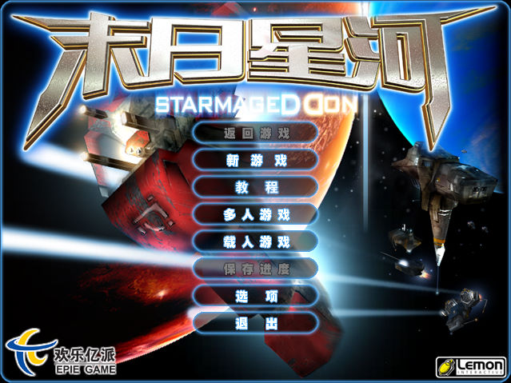
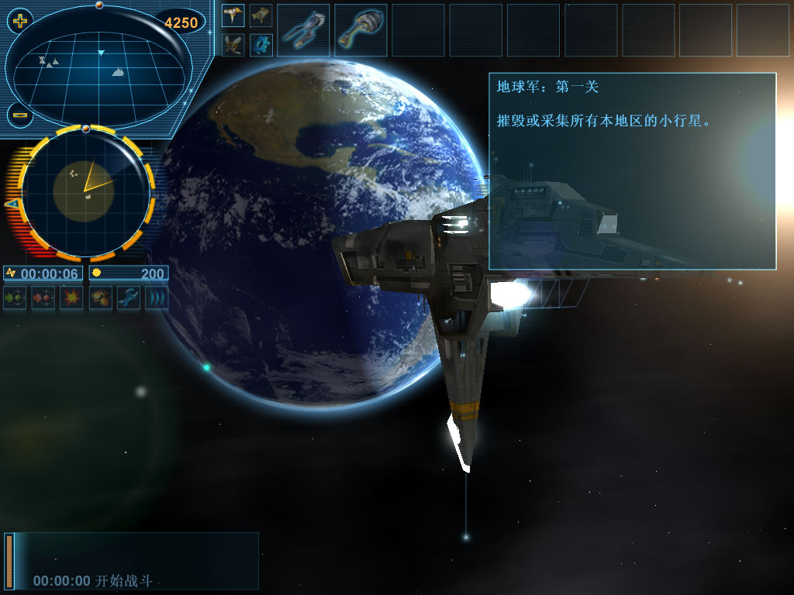

名稱：末日星河／地球計畫／地球計劃：星際末日 (Project Earth: Starmageddon，簡中／英文版)
簡介：Lemon 2002年出品的即時戰略遊戲，由DreamCatcher代理發行，大陸由歡樂億派簡中
化並代理發行 [待補]。


保護：英文版為光碟SafeDisc 2.60，簡中版為光碟，破解碼：
starmageddon.exe
84 C0 75 7E 8B 3D
-- -- EB -- -- --
備註：非移機安裝者，需設定下列Registry（假設光碟在D，已破解者不需要）：
(簡中版)
[HKEY_LOCAL_MACHINE\SOFTWARE\We Open Eyes\Starmageddon]
"Drive"="D:\\"
(英文版)
[HKEY_LOCAL_MACHINE\SOFTWARE\We Open Eyes\Project Earth]
"Drive"="D:\\"
備註：簡中版需在簡中系統上執行，否則部份文字會亂碼。
備註：最好取消勾選圖像壓縮（Texture Compression），否則進入遊戲可能會顯示異常。
備註：VirtualBox無法執行，虛擬機請使用VMware。
檔案：nocde.rar = 英文版免光碟檔